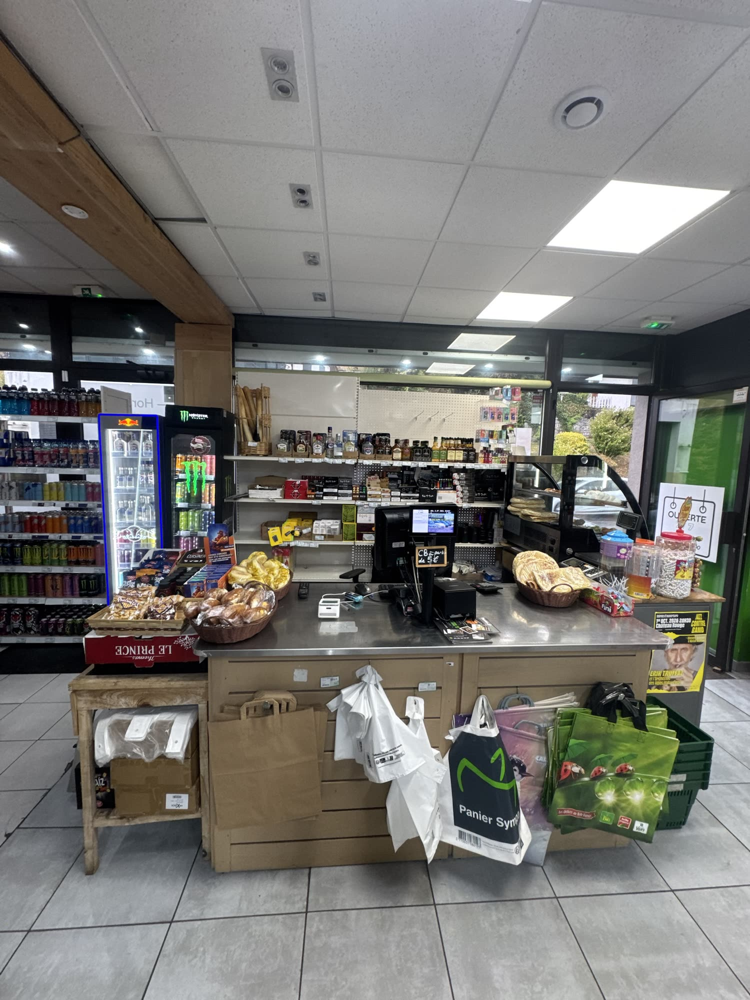
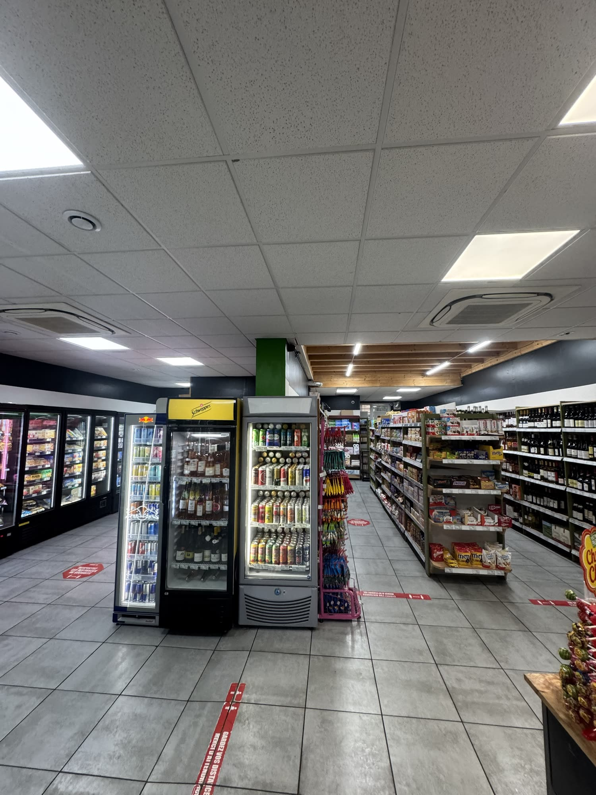
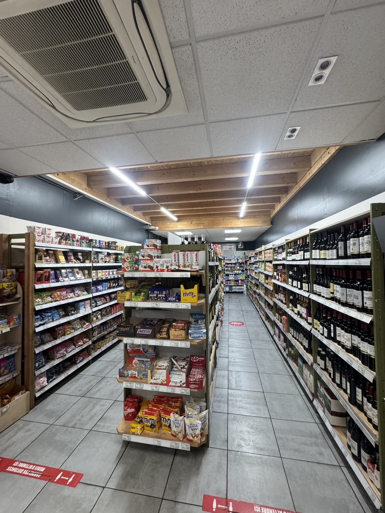
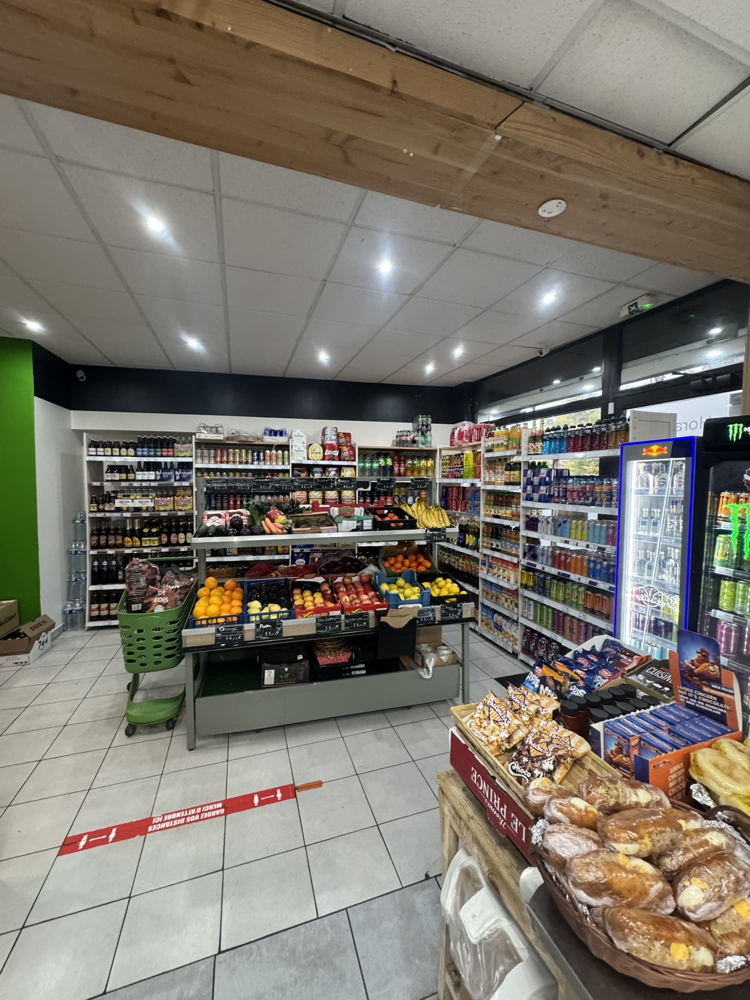
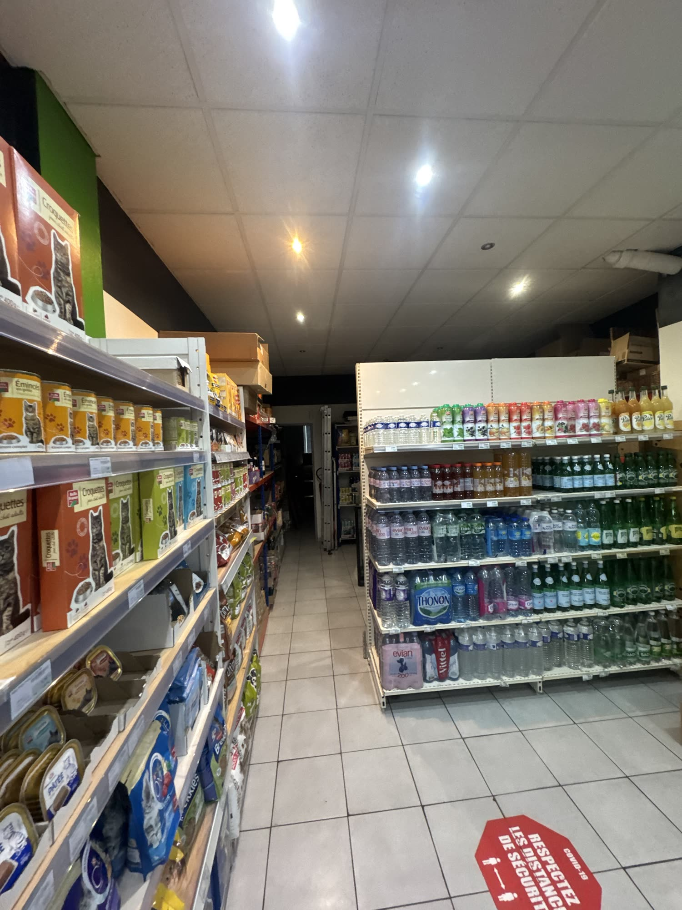
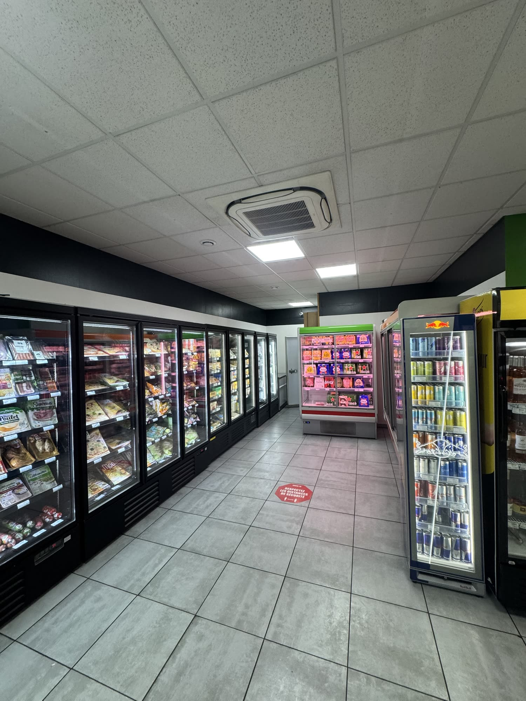
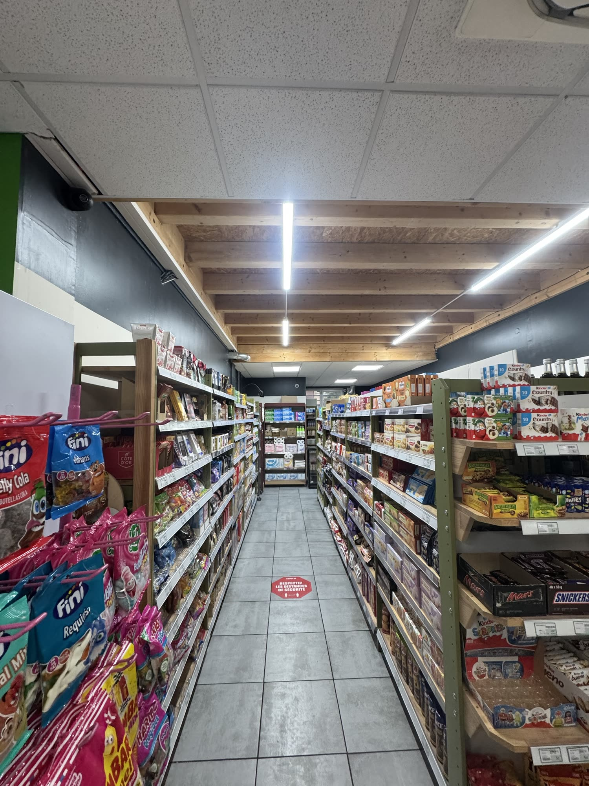
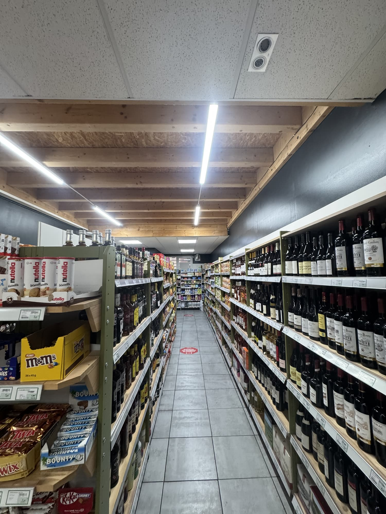
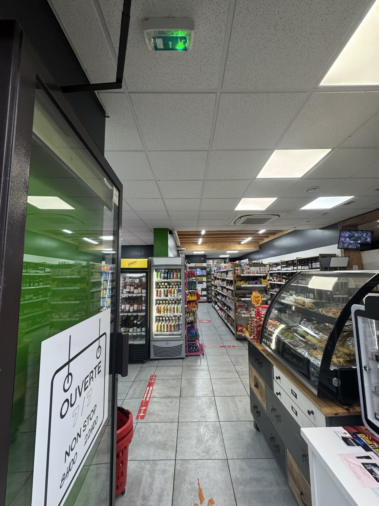
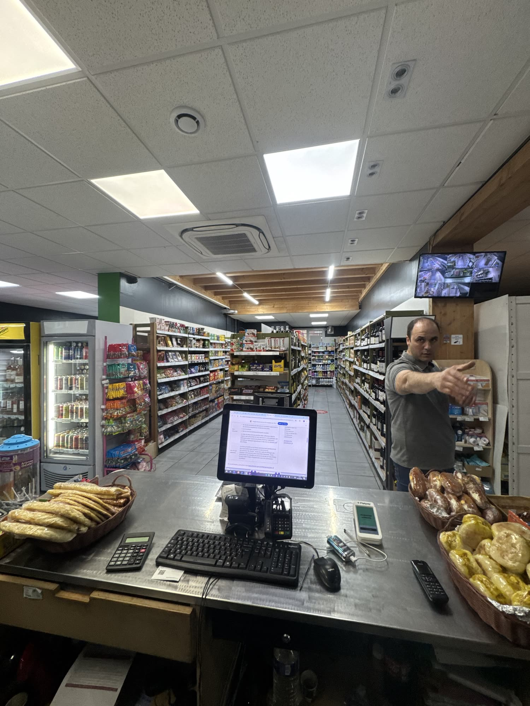

Épicerie de quartier à Bonne
Panier Sympa
Fruits et légumes, boissons fraîches, frais et surgelés, vins, confiseries. Tout ce qu'il faut, tous les jours, dimanche compris, et tard le soir.
Ouvert 7 jours sur 7
Entrez, on vous guide.
- 1
L'entrée et la caisse
Poussez la porte : la caisse est juste à droite, avec les viennoiseries et le dépannage de dernière minute.
- 2
Le couloir des boissons
À gauche, un couloir de frigos des deux côtés : boissons fraîches, énergisants, bières, frais et surgelés.
- 3
Deux allées devant vous
Les confiseries et les chocolats, puis les vins et les spiritueux, sous les poutres en bois.
- 4
Fruits et légumes
À droite de la caisse, l'étal de fruits et légumes, au milieu des boissons.
- 5
Le fond du magasin
Les eaux, les jus, l'hygiène, l'entretien et même un rayon pour les animaux.





Tout ce qu'il faut, sans aller loin.
Des produits du quotidien, des petits plaisirs et du dépannage, sous les poutres en bois.
Boissons fraîches
Sodas, énergisants, bières, eaux et jus, toujours au frais.

Frais et surgelés
Pizzas, charcuterie, plats prêts à réchauffer.
Fruits et légumes
Oranges, pommes, bananes, légumes du jour.

Confiseries et chocolats
Les petits plaisirs, des bonbons aux barres chocolatées.

Vins et spiritueux
Un mur de vins et un choix de spiritueux.

Viennoiseries et dépannage
La vitrine à l'entrée et les petits indispensables.

Un accueil de quartier
On vous renseigne, on vous conseille.
Pour les petits riens qui font tout.
Fruits et légumes, boissons fraîches, frais et surgelés, confiseries, viennoiseries. Ouvert 7 jours sur 7, jusqu'à 22h, et jusqu'à 23h du jeudi au samedi.
Appelez-nousLa boutique en 28 secondes.
Un tour rapide : l'entrée, les rayons, les horaires et comment nous joindre.
Appelez-nousOuvert tous les jours, tard le soir.
Dimanche dès 9h, les autres jours dès 8h. Fermeture à 22h, et à 23h du jeudi au samedi.
Ouvert 7 jours sur 7
- Lundi8h à 22h
- Mardi8h à 22h
- Mercredi8h à 22h
- Jeudi8h à 23h
- Vendredi8h à 23h
- Samedi8h à 23h
- Dimanche9h à 22h
100 Av. du Fer à Cheval, 74380 Bonne
La carte est fournie par Google et ne se charge qu'après votre clic. En savoir plus
Un petit rien à dépanner ?
04 56 30 70 07Appelez-nous, ou passez directement : on est ouvert tard le soir.